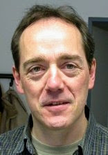

First Symposium on Compositional Structures (SYCO 1) |
The Symposium on Compositional Structures is a new interdisciplinary series of regular meetings aiming to support the growing community of researchers interested in the phenomenon of compositionality, from both applied and abstract perspectives, and in particular where category theory serves as a unifying common language.
SYCO 1 will be held on Thursday September 20 and Friday September 21, 2018 at the University of Birmingham, UK, and submissions are currently open. More detail about submitting to the symposium is available below
We welcome submissions from researchers across computer science, mathematics, physics, philosophy, and beyond, with the aim of fostering discussion, disseminating new ideas, and spreading knowledge of open problems between fields. Submission is encouraged for both mature research and work in progress, and by both established academics and junior researchers, including students. The meeting does not have proceedings.
While no list of topics could be exhaustive, SYCO welcomes submissions with a compositional focus related to any of the following areas, in particular from the perspective of category theory:
- logical methods in computer science, including classical and quantum programming, type theory, concurrency, natural language processing and machine learning;
- graphical calculi, including string diagrams, Petri nets and reaction networks;
- languages and frameworks, including process algebras, proof nets, type theory and game semantics;
- abstract algebra and pure category theory, including monoidal category theory, higher category theory, operads, polygraphs, and relationships to homotopy theory;
- quantum algebra, including quantum computation and representation theory;
- tools and techniques, including rewriting, formal proofs and proof assistants;
- industrial applications, including case studies and real-world problem descriptions.
Invited speakers
|  | |
| David Corfield | Jules Hedges |
| University of Kent | University of Oxford |
Important dates
All times are anywhere-on-earth.- Submission deadline: Sunday 5 August 2018
- Author notification: Monday 20 August 2018
- Travel support application deadline: Monday 27 August 2018
- Symposium dates: Thursday 20 September and Friday 21 September 2018
Submissions
Submissions are by EasyChair, with the possibility of submitting simply an arXiv identifier. Submissions should present original results with sufficient detail and clarity for them to be assessed by the programme committee. We encourage the submission of work in progress, as well as mature results. There is no page limit or specific format requirement.
There are no proceedings, so work can be submitted even if it has been previously published, or has been submitted for consideration elsewhere.
Click here to submit to SYCO 1.
Local information
Venue. The meeting will be held at the University of Birmingham in the Murray Learning Centre.
Registration. There is no registration fee, but registration is compulsory. A link will be made available soon.
Travel. With the University train station just 100 metres from the conference venue, the best way to travel to the symposium is by train. The University station is 11 minutes from Birmingham New Street, 27 minutes from Birmingham airport, 67 minutes from Leicester, 74 minutes from Sheffield, 77 minutes from Oxford, 94 minutes from London, and 134 minutes from Leeds.
If travelling from further afield, Birmingham airport has flights from all over Europe. Travel from the airport to the conference venue is 27 minutes by train.
Accommodation. There are many hotels in the centre of Birmingham, just a few minutes by train from the workshop venue. Alternatively, there are plenty of AirBnB options all over Birmingham.
Funding
Some funding may be available to support travel and subsistence, with a priority for PhD students and junior researchers.Programme committee
The symposium managed by the following people, who will serve as the programme committee for SYCO 1.- Ross Duncan, University of Strathclyde
- Chris Heunen, University of Edinburgh
- Aleks Kissinger, Radboud University Nijmegen
- Samuel Mimram, École Polytechnique
- Simona Paoli, University of Leicester
- Mehrnoosh Sadrzadeh, Queen Mary
- Pawel Sobocinski, University of Southampton
- Jamie Vicary, University of Birmingham and University of Oxford (chair, local organizer)